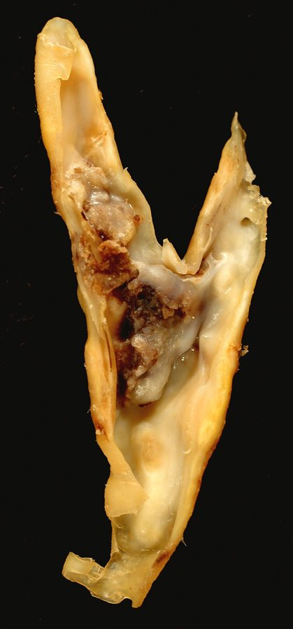
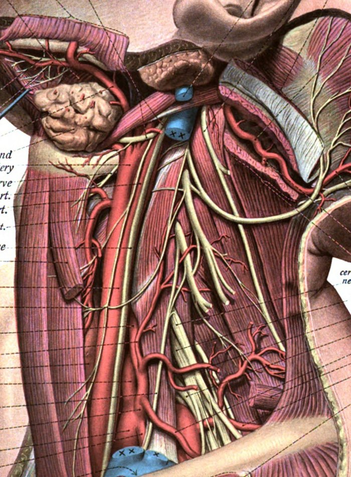
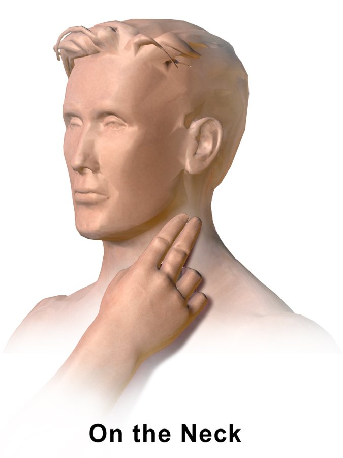
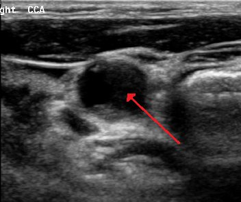
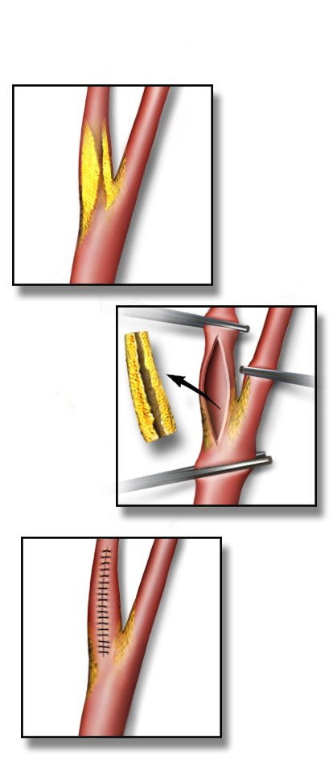

מחלות הקרוטיס
היצרות של עורק התרדמה: מי עם תסמינים ומי בלי, דופלקס, החלטה על התערבות, אנדארטרקטומיה וסטנט
בסוף המפגש תדעו
- להבחין בין היצרות קרוטיס עם תסמינים לבלי תסמינים ולזהות אמאורוזיס פוגקס, TIA ושבץ
- להאזין לאוושה בצוואר ולהבין את מגבלות הבדיקה
- לפרש דופלקס של הקרוטיס ולהכיר את מקומם של CTA, MRA ואנגיוגרפיה
- לדעת מתי מטפלים בתרופות בלבד ומתי מוסיפים התערבות, לפי אחוז ההיצרות והתסמינים
- להכיר את שלבי האנדארטרקטומיה, את חלופות הסטנט ואת הסיבוכים אחרי הניתוח
למה הקרוטיס חשוב?
- טרשת עורקים מתחילה כבר בעשור השלישי לחיים
- ההתפצלות של הקרוטיס חשופה לזרימה סוערת. לכן נוצר בה רובד
- הרובד מצר את העורק, אבל הסכנה העיקרית היא קריש שנוצר עליו ומתסחף למוח או לעין
- גורמי סיכון: עישון, יתר לחץ דם, דיסליפידמיה וסוכרת

מה רואים בחתך של אנדארטרקטומיה

👆 לחצו על מספר בציור כדי לקרוא עליו
בחלק התחתון של החתך, לאורך הגבול הקדמי של הסטרנוקליידומסטואיד. כאן קל למצוא אותו ולשלוט עליו בלולאה. בציור הווריד הצווארי הפנימי הוסר (הגדמים הכחולים): בניתוח מזיזים אותו לטרלית.
כאן הזרימה סוערת וכאן נוצר הרובד. הווריד הפציאלי מסמן בדרך כלל את הגובה. לא ממשמשים את הבולבוס: תסחיף מהרובד וברדיקרדיה מהברורצפטורים (אפשר להזריק מעט לידוקאין 1%). הקרוטיס החיצוני פונה לכיוון הפנים. הפנימי ממשיך למעלה ואחורה לבסיס הגולגולת.
בדרך כלל מאחורי הקרוטיס ולטרלית לו, לפעמים על פניו הקדמיים. נזהרים בניתוח ובהצבת המלחציים. לא להתבלבל עם ענפי ה-ansa cervicalis הדקים שעל העורק, שמותר לקשור. שימו לב לעצב לרינגאלי שאינו חוזר, שיוצא מהוואגוס בצוואר.
חוצה את הקרוטיס הפנימי והחיצוני בחלק העליון של החתך. מזהים אותו ושומרים עליו. בחלק הזה של הניתוח מפשק קבוע עוזר לחשיפה.
עם תסמינים או בלי? זו השאלה
- אמאורוזיס פוגקס: עיוורון חולף בעין אחת
- TIA קורטיקלי: חסר שחולף תוך 24 שעות
- שבץ: חסר שנמשך יותר, או שרואים אוטם ב-MRI
האזנה לאוושה בצוואר
- אוושה (bruit) היא הקול של זרימה סוערת בעורק צר. שומעים אותה בסטטוסקופ מעל הקרוטיס
- שלילית כוזבת: בהיצרות קריטית עוברת כל כך מעט זרימה שאין סערה ואין אוושה
- חיובית כוזבת: אוושה יכולה לבוא מהיצרות בקרוטיס החיצוני, שאינה מסוכנת באותה מידה
- לכן תמיד משלבים את הבדיקה עם הדמיה
- בכל מטופל עם מחלה וסקולרית מקשיבים גם לבטן ולמפשעה. ממששים את כל הדפקים

דופלקס קודם
קריטריונים בדופלקס לקרוטיס הפנימי
המגבלה הגדולה: תלוי במיומנות הבודק. הסתיידות יכולה להסתיר היצרות קשה

תרופות בלבד או גם התערבות?
אנדארטרקטומיה של הקרוטיס (CEA)
- תנוחה: שכיבה, כרית מתחת לכתפיים, ראש מסובב לצד השני. קו עורקי לניטור לחץ הדם
- חתך לאורך הגבול הקדמי של השריר הסטרנוקליידומסטואיד. דרך הפלטיזמה אל נדן הקרוטיס
- הווריד הצווארי הפנימי לטרלית. הווריד הפציאלי מסמן בדרך כלל את גובה ההתפצלות
- שומרים על עצב הוואגוס (מאחור ולטרלית) ועל העצב ההיפוגלוסלי (למעלה). לא ממשמשים את הבולבוס: תסחיף וברדיקרדיה
- הפרין ואז מלחציים: קודם על הקרוטיס הפנימי. פותחים לאורך, מוציאים את הרובד ותופרים טלאי. חלופה: אנדארטרקטומיה בהיפוך (eversion)
- הגנה על המוח: שאנט, EEG, מדידת לחץ בגדם, או ניתוח בהרדמה מקומית עם מטופל ער
- בדיקת סיום בדופלקס. מעירים את המטופל בחדר ניתוח ובודקים מצב נוירולוגי

סיבוכים שהסטודנט צריך לזהות
סטנט: דרך המפשעה או דרך הצוואר
- דרך הקשת. מסנן להגנה מתסחיף במהלך הפעולה
- בהרדמה מקומית, כדי לעקוב אחרי הדיבור והתנועה
- לא מתאים לקשת מסוג III או לקשת מסוידת וחולה. גם לא לנגע עם קריש
- מעל גיל 70: יותר שבץ ומוות מאשר בניתוח
- לפני: לפחות שבוע של שני נוגדי טסיות וסטטין
- חתך קטן בבסיס הצוואר, סוגרים את הקרוטיס המשותף. הדם זורם הפוך מהמוח לווריד הירך דרך מסנן
- לא נוגעים בקשת
- ROADSTER: שבץ ב-1.4% ב-30 יום
דיסקציה, FMD ומפרצת
שלושה ניסויים שמשנים את השיחה
היצרות של 70% ומעלה בלי תסמינים, 155 מרכזים. סטנט (1,245 מטופלים): שבץ או מוות ב-4 שנים 2.8% לעומת 6.0% בטיפול תרופתי אינטנסיבי בלבד, הבדל מובהק. ניתוח (1,240 מטופלים): 3.7% לעומת 5.3%, הבדל לא מובהק
Brott TG et al. N Engl J Med 2026;394:219-31 (online Nov 2025)429 מטופלים עם היצרות של 50% ומעלה (עם או בלי תסמינים) וסיכון מחושב נמוך לשבץ. טיפול תרופתי אופטימלי לבד מול טיפול תרופתי והתערבות: אין יתרון לאחד מהם אחרי שנתיים
Donners SJA et al. Lancet Neurol 2025;24:389-993,625 מטופלים, 130 מרכזים, מעקב של 5 שנים. שבץ או מוות משבית בפעולה: 1% בשתי הקבוצות. שבץ כלשהו אחרי הפעולה ב-5 שנים: 5.3% בסטנט לעומת 4.5% בניתוח, הבדל לא מובהק
Halliday A et al. Lancet 2021;398:1065-73חמישה דברים לקחת למחלקה
- הסכנה בקרוטיס היא תסחיף מהרובד. עין אחת שמחשיכה לרגע היא TIA של הקרוטיס
- "עם תסמינים" = אירוע בצד ההיצרות ב-6 החודשים האחרונים. ההבחנה הזו קובעת את הטיפול
- אוושה לא מספיקה לאבחנה. דופלקס הוא הבדיקה הראשונה
- עם תסמינים ו-50% ומעלה: התערבות. מתחת ל-50%: תרופות. בלי תסמינים: ויכוח פתוח. הטיפול התרופתי חובה לכולם
- אחרי אנדארטרקטומיה: המטומה בצוואר היא בעיה של דרכי אוויר. כאב ראש יכול להיות היפרפרפוזיה